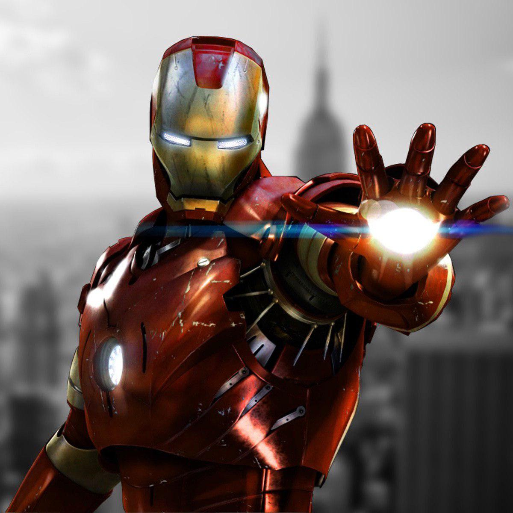

 Залізна Людина (англ. Iron Man), справжнє ім’я Ентоні Едвард "Тоні" Старк (англ. Anthony Edward "Tony" Stark) — супергерой, персонаж коміксів Marvel, який вперше з'явився у 39 випуску коміксу Tales of Suspense, і був вигаданий Стеном Лі і Джеком Кірбі.
Син багатого промисловця Говарда Старка, Тоні був геніальним винахідником і механіком. Він успадкував бізнес батька у віці 21 року, перетворивши компанію в одного з лідуючих виробників зброї. Старк був поранений осколком в груди під час польового випробування на придатність бойової броні, яка повинна була наділити солдат бойовими здібностями. Старка взяв в полон збройовий барон Вонґ Чу, змусивши його створити зброю масового ураження - тільки тоді Тоні отримав би операцію, необхідну для порятунку його життя. Разом зі своїм товаришем і колишнім полоненим Хо Йінсеном, лауреатом Нобелівської премії з фізики, Старк почав працювати над модифікованим екзоскелетом, оснащеним важким озброєнням. В секреті навіть від Старка, Йінсен сконструював захисну грудну пластинку для підтримки пораненого серця винахідника. Старк одягнув костюм, щоб спробувати втекти з полону, але сам Професор Йінсен був убитий у вирішальній сутичці. Він віддав своє життя, щоб Залізна людина зміг жити. Перемігши збройового барона, Старк повернувся в Америку і переконструював костюм. Вигадавши історію, що Залізна людина був його охоронцем, Старк вступив в подвійне життя як мільярдер-винахідник і костюмований шукач пригод. Ранні вороги посилали шпигунів і іноземних агентів в намірі вкрасти броню Старка і його військові секрети. Через деякий час Старк припинив захищати тільки свої особисті інтереси. Він також став займатися питаннями національної та міжнародної безпеки. Залізна людина допоміг заснувати Месників і став спонсором їх команди. Незважаючи на величезне багатство, життя Старка не бездоганне. Починаючи свою кар'єру, він був змушений весь час носити нагрудну пластину, щоб захистити своє серце. Старк, до того ж, колишній алкоголік, і його особисте життя - суцільний безлад. У багатьох випадках, Залізна людина - це звільнення та оболонка, яку він носить, щоб тримати навколишній світ в стороні. Вороги Залізної людини мали різні форми, від завойовників з претензіями на світове панування і корпоративних конкурентів до супер-злочинців і іноземних агентів, які прагнули перевершити або вкрасти його технології. Старк ріс, відчуваючи зростаючу відповідальність за використання його технологій по всьому світу. Старк Інтерпрайзіс розірвало співпрацю з урядом, зосередившись на технологіях, які поліпшать життя людей. Навчений в молодості платити тим, хто допоміг йому жити настільки комфортним життям, Старк заснував безліч благодійних фондів та установ. З все більшим почуттям відповідальності він досяг нового рівня дорослішання. Порівнюючи свій секрет більше з боргом, ніж з особистим майном, Старк зважився розкрити світу, що він - Залізна людина. З вантажем подвійного життя на своїх плечах Старк виявив себе на незнайомій території як один з небагатьох публічно відомих героїв. Тоні Старк - затятий фанат футболу.